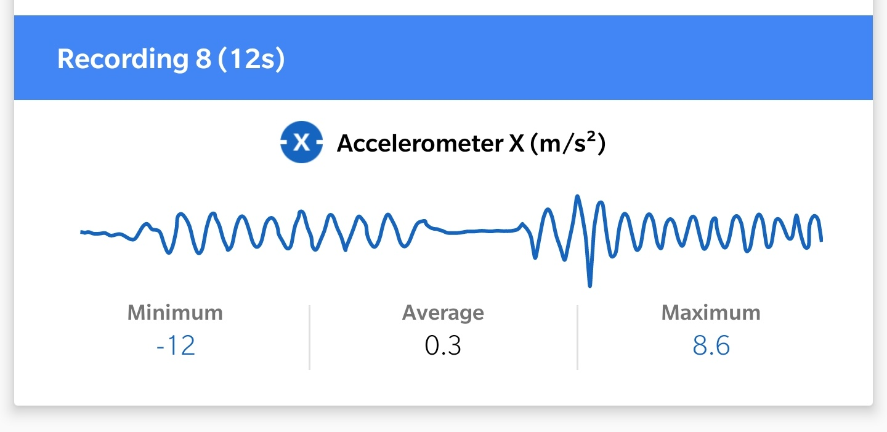

Interface
Experiments
- Sensor Testing
Here are some testing done on different sensors present in my smartphone (Oneplus 7 Pro). These data can also be download in .csv format grom the app with timestamp to perform various task and analysis.
We can also connect our Arduino Board with the app with sort of connection to use phone sensors in the project.
1. Sound Intensity

2. Pitch
3. Linear accelerometer
4. Accelerometer X

5. Accelerometer Y
6. Compass
7. Magnetometer
8. Light